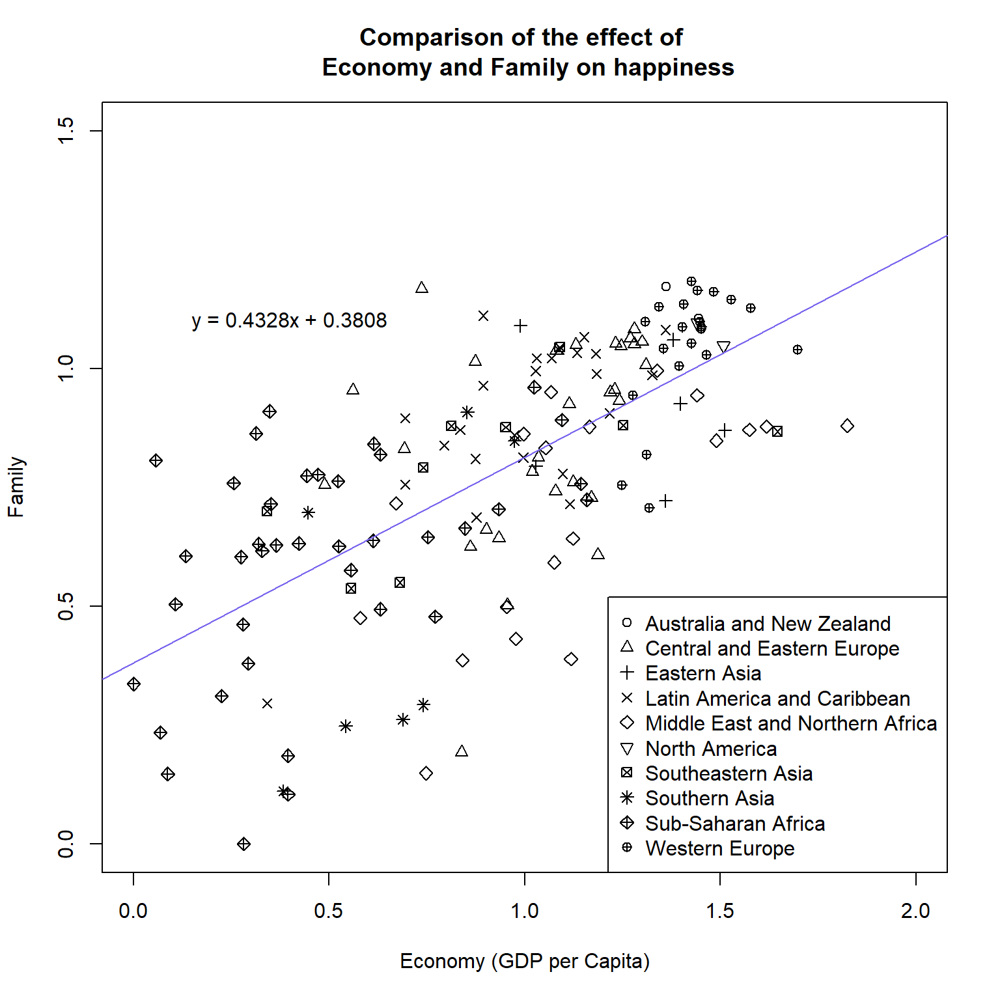
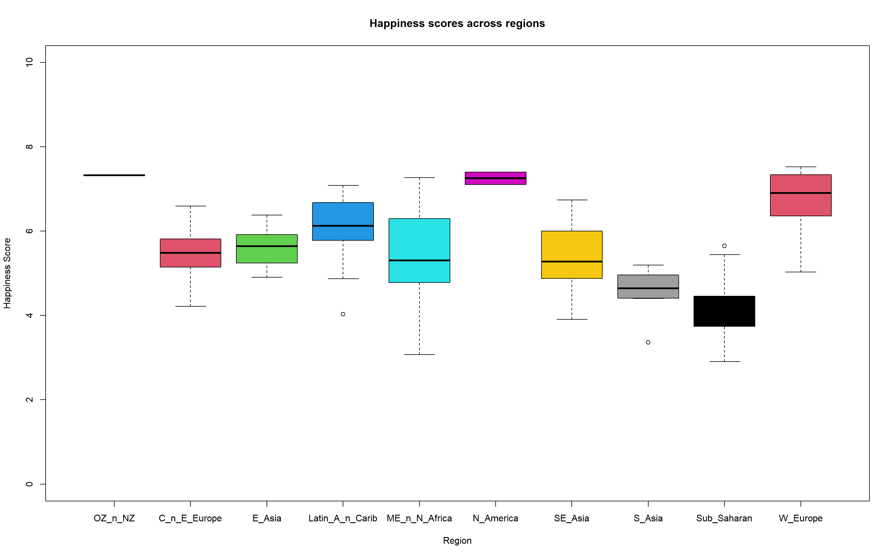

Chapter 16 Stats exercises

Please use your "Exercises.R" script for this exercise and the main workshop directory as the working directory. Ensure you are using annotations and code sections to keep the contents clear and separated.
16.1 Data
For this exercise we will be looking at the World Happiness Report for 2016. This report is a survey of the state of global happiness.
Download world_happiness_report_2016.csv to the directory "Chapter_15-16".
Source: https://www.kaggle.com/unsdsn/world-happiness?select=2016.csv
The columns for the data are:
- Country: Name of the country.
- Region: Region the country belongs to.
- Happiness Rank: Rank of the country based on the Happiness Score.
- Happiness Score: A metric measured in 2016 by asking the sampled people the question: "How would you rate your happiness on a scale of 0 to 10 where 10 is the happiest".
- Lower Confidence Interval: Lower Confidence Interval of the Happiness Score.
- Upper Confidence Interval: Upper Confidence Interval of the Happiness Score.
- Economy (GDP per Capita): The extent to which GDP contributes to the calculation of the Happiness Score.
- Family: The extent to which Family contributes to the calculation of the Happiness Score.
- Health (Life Expectancy): The extent to which Life expectancy contributed to the calculation of the Happiness Score.
- Freedom: The extent to which Freedom contributed to the calculation of the Happiness Score.
- Trust (Government Corruption): The extent to which Perception of Corruption contributes to Happiness Score.
- Generosity: The extent to which Generosity contributed to the calculation of the Happiness Score.
- Dystopia Residual: The extent to which Dystopia Residual contributed to the calculation of the Happiness Score. More info in the "What is Dystopia?" section at https://worldhappiness.report/faq/.
16.2 World happiness challenges
With that information carry out the following challenges and answer the questions.
Solutions are in the expandable boxes. Try your best to solve each challenge but use the solutions for help if you would like. Even if your method works it can be good to check the solution as there are many ways to do the same thing in R.
World happiness challenge 1
Read in the file "world_happiness_report_2016" as data frame called "happy_df". Ensure strings are read in as factors and that none of the columns are read in as row names.
World happiness challenge 2
Answer the following questions using the output from one function:
How many countries are in the region "Western Europe"?## Country Region Happiness Rank Happiness Score Lower Confidence Interval
## Afghanistan: 1 Sub-Saharan Africa :38 Min. : 1.00 Min. :2.905 Min. :2.732
## Albania : 1 Central and Eastern Europe :29 1st Qu.: 40.00 1st Qu.:4.404 1st Qu.:4.327
## Algeria : 1 Latin America and Caribbean :24 Median : 79.00 Median :5.314 Median :5.237
## Angola : 1 Western Europe :21 Mean : 78.98 Mean :5.382 Mean :5.282
## Argentina : 1 Middle East and Northern Africa:19 3rd Qu.:118.00 3rd Qu.:6.269 3rd Qu.:6.154
## Armenia : 1 Southeastern Asia : 9 Max. :157.00 Max. :7.526 Max. :7.460
## (Other) :151 (Other) :17
## Upper Confidence Interval Economy (GDP per Capita) Family Health (Life Expectancy) Freedom
## Min. :3.078 Min. :0.0000 Min. :0.0000 Min. :0.0000 Min. :0.0000
## 1st Qu.:4.465 1st Qu.:0.6702 1st Qu.:0.6418 1st Qu.:0.3829 1st Qu.:0.2575
## Median :5.419 Median :1.0278 Median :0.8414 Median :0.5966 Median :0.3975
## Mean :5.482 Mean :0.9539 Mean :0.7936 Mean :0.5576 Mean :0.3710
## 3rd Qu.:6.434 3rd Qu.:1.2796 3rd Qu.:1.0215 3rd Qu.:0.7299 3rd Qu.:0.4845
## Max. :7.669 Max. :1.8243 Max. :1.1833 Max. :0.9528 Max. :0.6085
##
## Trust (Government Corruption) Generosity Dystopia Residual
## Min. :0.00000 Min. :0.0000 Min. :0.8179
## 1st Qu.:0.06126 1st Qu.:0.1546 1st Qu.:2.0317
## Median :0.10547 Median :0.2225 Median :2.2907
## Mean :0.13762 Mean :0.2426 Mean :2.3258
## 3rd Qu.:0.17554 3rd Qu.:0.3119 3rd Qu.:2.6646
## Max. :0.50521 Max. :0.8197 Max. :3.8377
## World happiness challenge 3

Create the below plot.
- The equation does not have to be in exactly the same position as the below. Just make sure it is all clearly visible, it contains the same text, and it is not on top of any points.
- The colour for the line is "mediumslateblue"
- Note you can put "\n" into a label/title to make a new line.
- e.g "This is the first line \n and this is the second line"

#Fit linear model of Economy (x) against Family (y)
fit_economy_family <-
lm(Family~`Economy (GDP per Capita)`, data = happy_df)
#Create string for linear equation
c <- round(fit_economy_family$coefficients[1], digits = 4)
m <- round(fit_economy_family$coefficients[2], digits = 4)
lm_equation <- paste0("y = ", m , "x + ", c)
#Produce plot
plot(x = happy_df$`Economy (GDP per Capita)`,
y = happy_df$Family,
main = "Comparison of the effect of \n Economy and Family on happiness",
xlab = "Economy (GDP per Capita)",
ylab = "Family",
pch = as.numeric(happy_df$Region),
xlim = c(0,2), ylim = c(0,1.5),
col = 1)
#Add abline
abline(fit_economy_family, col = "mediumslateblue")
#Add equation to top right
text(x = 0.4, y = 1.1, labels = lm_equation)
#Add the legend
legend(x = "bottomright",
pch = 1:nlevels(happy_df$Region),
legend = levels(happy_df$Region))World happiness challenge 4
It may be a bit awkward to get the right size for the plot in the "Plots" pane. Therefore save it as a png file with the following options:
- File name of "Economy_vs_family.png"
- Dimensions of file is 8 inches for height and width
- Resolution of 200dpi
#PNG command
png(filename = "Chapter_15-16/Economy_vs_family.png",
units = "in", height = 8, width = 8, res = 200)
#Produce plot
plot(x = happy_df$`Economy (GDP per Capita)`,
y = happy_df$Family,
main = "Comparison of the effect of \n Economy and Family on happiness",
xlab = "Economy (GDP per Capita)",
ylab = "Family",
pch = as.numeric(happy_df$Region),
xlim = c(0,2), ylim = c(0,1.5),
col = 1)
#Add abline
abline(fit_economy_family, col = "mediumslateblue")
#Add equation to top right
text(x = 0.4, y = 1.1, labels = lm_equation)
#Add the legend
legend(x = "bottomright",
pch = 1:nlevels(happy_df$Region),
legend = levels(happy_df$Region))
#dev.off
dev.off()World happiness challenge 5
Answer the following questions using information on the line graph and the linear model.
Does the linear model have a positive or negative gradient?World happiness challenge 6
Create the following boxplot.
- You can change the the levels with the following code
short_region_names <-
c("OZ_n_NZ", "C_n_E_Europe", "E_Asia", "L_America_n_Caribbean",
"Middle_E_n_N_Africa", "N_America", "SE_Asia", "S_Asia",
"Sub_Saharan", "W_Europe")
levels(happy_df$Region) <- short_region_names
#Change level names
short_region_names <-
c("OZ_n_NZ", "C_n_E_Europe", "E_Asia", "Latin_A_n_Carib",
"ME_n_N_Africa", "N_America", "SE_Asia", "S_Asia",
"Sub_Saharan", "W_Europe")
levels(happy_df$Region) <- short_region_names
#Create boxplot
boxplot(`Happiness Score`~Region, data = happy_df,
ylim = c(0,10),
col = 1:nlevels(happy_df$Region),
main = "Happiness scores across regions"
)World happiness challenge 7

Save the above as a jpeg called "Region_happiness_boxplots.jpg" with a width of 1600 pixels and a height of 750 pixels.
World happiness challenge 8
Last challenge! Carry out t-tests on the following comparisons for Happiness Score and determine if the means are significantly different.
- West Europe and North America
- West Europe and South Asia
- South Asia and South Eastern Asia
#Subset the data frames to get vectors of our regions of interest
WE_happiness <- happy_df[happy_df$Region == "W_Europe","Happiness Score"]
NA_happiness <- happy_df[happy_df$Region == "N_America","Happiness Score"]
SA_happiness <- happy_df[happy_df$Region == "S_Asia","Happiness Score"]
SEA_happiness <- happy_df[happy_df$Region == "SE_Asia","Happiness Score"]
#Carry out t-tests
WE_NA_ttest <- t.test(WE_happiness, NA_happiness)
WE_SA_ttest <- t.test(WE_happiness, SA_happiness)
SA_SEA_ttest <- t.test(SA_happiness, SEA_happiness)
#Extract p values into a new vector with element names
region_happiness_pvalues <- c(WE_NA = WE_NA_ttest$p.value,
WE_SA = WE_SA_ttest$p.value,
SA_SEA = SA_SEA_ttest$p.value)
#Logical to determine if the p-value is less than 0.05
#I.e. the means are significantly different
region_happiness_pvalues < 0.05## WE_NA WE_SA SA_SEA
## FALSE TRUE FALSE